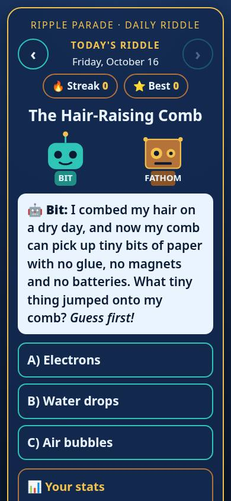
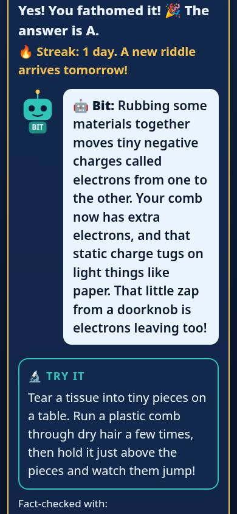
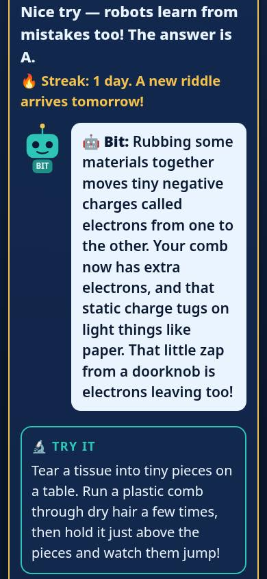
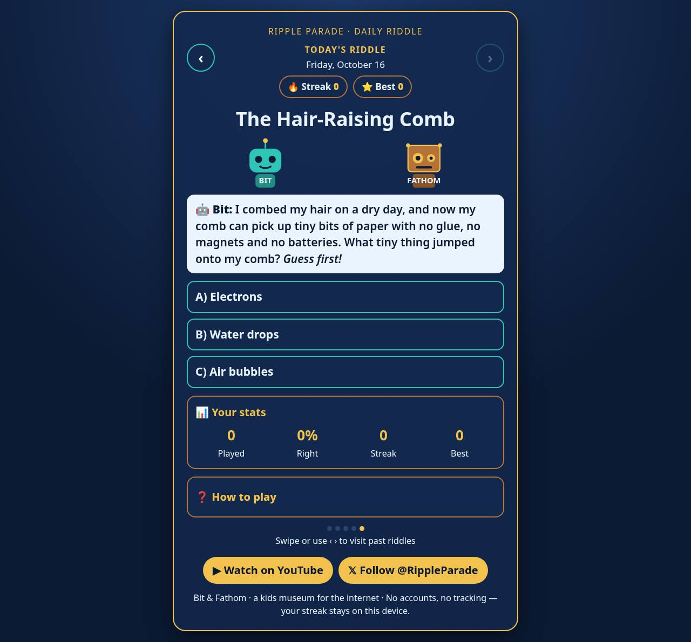
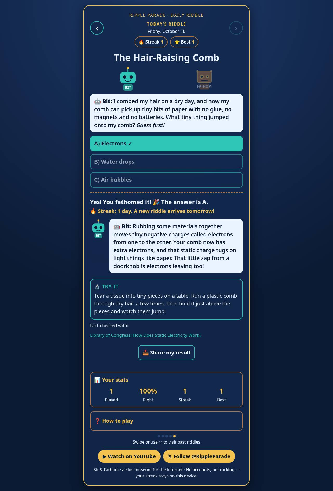

🧩 Bit & Fathom Daily Riddle
Your 10-minute review ✅
⏰ Due: Mon Oct 26, 5 PM ET
▶️ Try the app✅ Your to-do list
💡 The checkmarks are just for you. Nothing is sent.
🎯 Scope
What we are making
- One science riddle a day for kids 7–12.
- Two robots ask it: Bit and Fathom.
- Kid picks an answer, then gets the why, a try-at-home test, and a real source.
- No accounts, no ads, no tracking.
📖 Read the full text
--- doc: scope status: approved --- # Bit & Fathom Daily Riddle ## The Unique Kernel One short, science-checked riddle a day, asked by two friendly robots (Bit and Fathom), that a kid can answer in under a minute and then *try at home*. Every answer — right or wrong — ends in a real explanation, a kid-safe experiment and a real source. ## Who It's For Curious kids roughly 7–12, playing on a parent's phone or a classroom screen, plus the grown-up next to them. No accounts, no reading walls. ## The Core Loop Open the page → meet today's riddle → pick one of three or four answers → see right/wrong with a kind explanation and a "try it" → streak ticks up → come back tomorrow. ## Inspiration & Identity The Ripple Parade world: Bit (teal round robot) and Fathom (square bronze robot with gold bolts). Navy night-sky background, gold and teal accents. Calm, warm, a little playful. Built from the four existing live riddle pages (001–004). ## Why This Matters to the Learner Turns the team's one-off riddle pages into a habit-forming product kids return to — and is the team's first project built through a written plan-first workflow. ## What "Working" Looks Like A kid opens one page on a phone, answers today's riddle, sees feedback and a try-it, and the next day sees a new riddle with their streak remembered — with nothing sent anywhere. ## The POC Boundary 14 riddles, one daily pick by local date, 3–4 choice answers, explanation + try-it + source, streak and best streak in device storage, archive of past riddles, encore loop after day 14. Single static HTML file. ## Later More riddles from the content team; audio read-aloud; printable classroom cards; installable home-screen app. ## Explicitly Cut Accounts, logins, leaderboards, sharing, analytics, ads, cookies, external fonts/scripts, money/crypto of any kind, push notifications, AI chat with kids.
🧭 PRD (the plan)
How it works for the kid
- Open the page → see today's riddle.
- Tap an answer → right ✓ or kind "nice try".
- A wrong guess still counts for the streak 🔥.
- Tap ‹ › to replay past riddles. After 14 days they come back as Encores.
- 📤 Share an emoji-only result, see 📊 stats, and read ❓ How to play.
📖 Read the full text
---
doc: prd
status: approved
---
# Bit & Fathom Daily Riddle — Product Requirements
## The Core Journey
1. Kid opens the page; header shows Bit & Fathom, today's date label and the streak.
2. Today's riddle card shows the speaker robot, title, question and three or four choices (A–D).
3. Kid taps a choice. Choices lock.
4. Feedback appears: correct answer gets teal + ✓; a wrong pick is muted coral labelled "· your guess"; a kind message ("Nice try — robots learn from mistakes too!").
5. Explanation, a kid-safe "Try it" and a source link appear.
6. Streak updates once for today. Kid can browse past riddles in the archive.
7. Tomorrow, a new riddle appears; after 14 days riddles loop with an "Encore" badge.
## Screens and Layout
One page, mobile-first (390px) and scaling to desktop (1280px): header + streak, riddle card, feedback panel, archive list, footer with gold @RippleParade YouTube/X pills.
## Look and Feel
Navy background, gold accents, teal highlights, the shell's existing fonts. Exact Bit and Fathom SVGs from the logic-gates exhibit — never redrawn. Gold focus ring on choices. Encore badge navy text on gold.
## Features and Behavior
### Daily riddle
Riddle index = days since the launch date on the **device's local calendar**, modulo 14. Day 14+ shows Encore.
### Answering
One answer per riddle; right = teal ✓, wrong = coral "your guess" + correct shown.
### Streak
Rules in STREAK.md: playing today counts right or wrong; one change per local day; archive never changes it; a skipped day resets to 0 on next visit; best streak kept.
### Archive
Past riddles (up to today) can be replayed without affecting the streak.
## States and Boundaries
First visit: streak 0. Storage blocked: app still works, streak just isn't remembered. Reload same day: answer and streak kept. Reduced-motion users get no animation.
## Product Decisions
Wrong answers don't punish (kids shouldn't lose a streak for guessing). Local date not UTC so a riddle never flips mid-evening.
## What We're Building
The POC in scope.md, as one self-contained HTML file built from src.html + riddles.json.
## Deferred From the POC
Read-aloud, more riddles, installable app.
## Possible Later Enhancements
Classroom mode, printable cards.
## Non-Goals
Accounts, data collection, trackers, external loads, sharing, ads.
## Open Questions
None blocking. Content additions go through the content team's science check.
🛠️ Spec (the build)
How it is built
- One single web page, no server needed.
- 14 riddles, all fact-checked.
- The streak is saved only on the phone.
- Uses the phone's own date, so the riddle changes at local midnight.
📖 Read the full text
---
doc: spec
status: approved
---
# Bit & Fathom Daily Riddle — Technical Spec
## How This Works, In Plain Language
All riddles live in a small data file. A build step pours that data into a page template, producing one HTML file that runs entirely in the browser. The page works out today's riddle from the device's calendar and remembers your streak in the browser's own storage.
## The Core Journey Through the System
Load index.html → read inlined riddle JSON → compute local day index → render card (implements `prd.md > Daily riddle`) → on tap, grade and render feedback (`prd.md > Answering`) → update streak object and save to localStorage (`prd.md > Streak`) → render archive (`prd.md > Archive`).
## Stack
Plain HTML/CSS/vanilla JS, no frameworks, no dependencies. Python 3 for build, validation and tests (Playwright + headless Chrome).
## Where It Runs and How Someone Tries It
Open index.html in any browser, or serve the folder (`python3 -m http.server`). Can be hosted as a static file anywhere.
## Look and Feel
Implements `prd.md > Look and Feel`: CSS variables for navy/gold/teal/coral; SVGs inlined verbatim; tap targets ≥48px; `@media (hover:hover)` for hover styles; `prefers-reduced-motion` disables animation.
## Components
### Riddle data — riddles.json
Array of 14 objects: id, title, question, choices[3–4], answer_index, explainer, try_it, source_title, source_url, speaker. Validated by validate_riddles.py.
### Template — src.html
Markup, styles, SVGs and script with a `%%INLINE%%` placeholder.
### Build — build.py
Inlines riddles.json (escaping `</`) into src.html → index.html.
### Day mapper
Local-date day count from launch (2026-10-12 → 001), modulo 14, encore flag when day ≥ 14.
### Streak engine
Implements STREAK.md; state `{ans:{date:choice}, streak, best, last}` in localStorage.
## Data Model
localStorage key holds `{"ans":{"YYYY-MM-DD":choiceIndex},"streak":n,"best":n,"last":"YYYY-MM-DD"}`. Nothing else stored; nothing leaves the device.
## File Structure
`src.html`, `riddles.json`, `build.py`, `index.html` (built), `validate_riddles.py`, `STREAK.md`, `tests/streak_date_test.py`, `tests/riddle_smoke.sh`, `shots/`, `devpost/`.
## External Services and Dependencies
None at runtime. Source links are plain outbound links only.
## Important Failure Modes
localStorage unavailable → in-memory fallback. Clock changes → mapping uses local date only. Riddles run out → encore loop.
## What Was Simplified and Why
Single file, no build tooling beyond Python, no server — fastest to review, host and keep private-by-design for kids.
## Decisions and Open Issues
Streak counts plays, not correctness (kid-friendly). No open issues.
📸 Pictures
📱 Phone



💻 Computer


🎬 Video script (about 2 min)
- 0:00–0:10 — Title card, then the live page on a phone. "Bit & Fathom Daily Riddle: one science riddle a day for curious kids."
- 0:10–0:35 — Read today's riddle (The Hair-Raising Comb). Tap B, Water drops. Show the coral "your guess", the teal ✓ on Electrons and "Nice try — robots learn from mistakes too!"
- 0:35–0:55 — Scroll: Bit's explanation, the Try It (tissue + comb), the fact-check link. "Every answer ends in something to try at home, and a real source."
- 0:55–1:15 — Streak, Best and Stats. Tap 📤 Share: an emoji-only result, no spoilers. "A wrong guess still counts. Everything stays on this device; no accounts or trackers."
- 1:15–1:35 — Tap ‹ to replay a past riddle; the streak doesn't change. Open ❓ How to play.
- 1:35–1:52 — The repo: `devpost/scope.md`, `prd.md`, `spec.md`, `checklist.md`. "We planned it with the Devpost Learn Skill Pack before building."
- 1:52–2:00 — Closing card: MIT licensed, @RippleParade.
🔒 Safety check
- No trackers, no ads, no cookies.
- No personal info and no passwords in the code.
- Every button and link was tested on phone and computer.